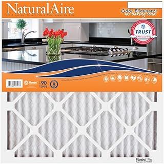
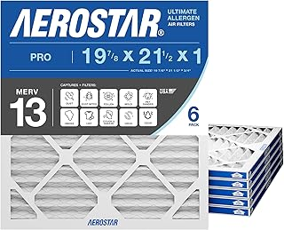

← bestofficefilter.com
Finding the Best Officefilter Without Overpaying
May 2026
There's a reason officefilter is trending right now. People want quality without overpaying, and 2026 delivers solid options at every price point.
Rookie Mistakes
Ignoring the fine print — Some officefilter listings look great until you realize key parts are sold separately.
Panic buying on sale days — Prime Day and Black Friday officefilter deals aren't always real discounts. Check year-round pricing.
Going with the cheapest option — Budget officefilter cut corners. Spending 20% more often gets something that lasts 3x longer.
The Specs That Matter
- Availability — In-stock with fast shipping beats a "better" product backordered for weeks.
- Value ratio — Mid-range officefilter usually deliver 90% of premium performance at half the cost.
- Total cost of ownership — The cheapest officefilter upfront can be the most expensive over time with replacements and accessories.



Our Current Favorites
⭐ 4.7 · $54.99
⭐ 4.6 · $54.99
⭐ 4.7 · $30.16
What Most Reviews Skip
- Check "Frequently Bought Together" — it shows what extras you might need for your officefilter.
- Set a firm budget before browsing. It's easy to creep up $50-100 comparing officefilter features.
- Between two options? Go with the one that has more reviews. Volume of feedback matters for officefilter.
Final Verdict
Our comparison tables on bestofficefilter.com break down options by price, features, and ratings. Start there.
Affiliate Disclosure: As an Amazon Associate, we earn from qualifying purchases. This doesn't affect our recommendations.